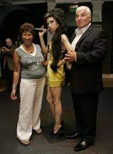
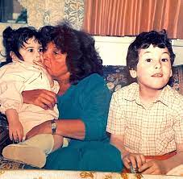
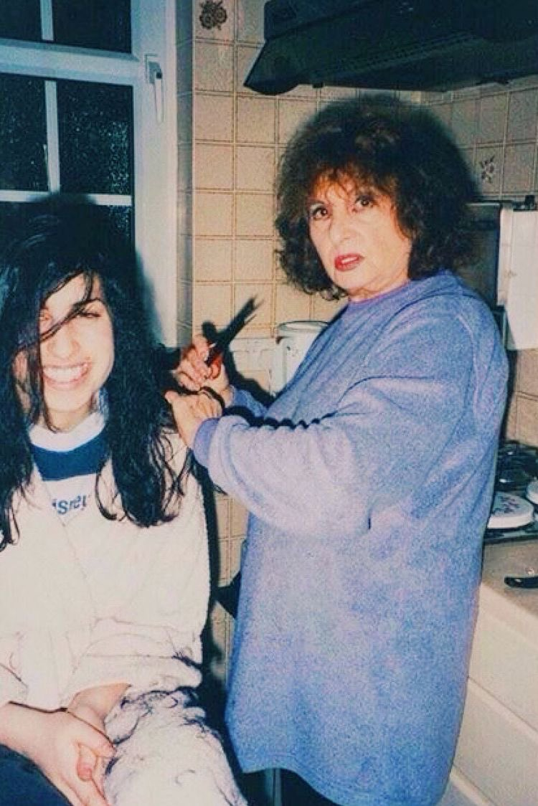
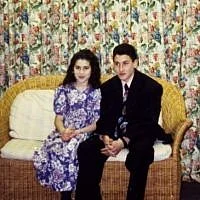
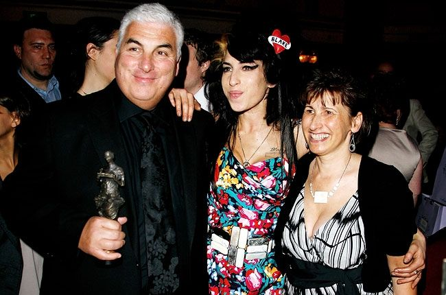

Comienzos
Winehouse nació el 14 de septiembre de 1983, en el seno de una familia judía y con tradición musical en el jazz. Se crio en los suburbios de Southgate (norte de Londres), junto a su padre Mitchell (conductor de taxi), su madre Janis (farmacéutica) y su hermano mayor Alex. Mitchell le cantaba constantemente éxitos de Frank Sinatra a la joven Winehouse, que pronto empezó a imitar el hábito de su padre hasta tal punto que sus maestros no podían mantenerla callada en clase.
Sus padres, Mitch y Janis, formaban una pareja de clase media-baja aficionada al soul y al jazz. Muy pronto descubrieron que no tenían autoridad para atemperar el endemoniado carácter de su hija, una niña rebelde que exigía constante atención. La única persona que parecía tener cierta ascendencia sobre la niña era su abuela paterna, Cynthia.
A sus 9 años sus padres se separaron y ya nada sería igual. Su progenitor se fue de casa demasiado pronto y esa falta de afecto paternal la marcaría por siempre. Su madre trabajaba muchas horas para suplir las ausencias y no pudo ponerle límites ni acompañarla como Amy necesitaba. Comenzaron a expulsarla del colegio y prácticamente, hacía lo que quería. “Mi madre tuvo a sus hijos. Los criaba prácticamente sola porque cuando estaba mi padre, nunca estaba. Nunca estaba para las cosas importantes. No hablo de llevarnos a la escuela, digo por la noche, cuando nos portábamos mal. Decíamos: ‘No nos acostaremos’. Mi padre nunca estaba para decir: ‘¡Háganle caso a su madre!’. Y eso era lo que necesitábamos. Él decía que estaba trabajando” , revelaría Amy años después, en una entrevista.
Encontró refugio en su abuela paterna, Cynthia, y en su hermano mayor Alex, quien le enseñó a tocar la guitarra. La música siempre fue un lugar que la mantuvo a flote: componía durante horas y plasmaba en esas partituras todo el dolor que la hundía.
    
Del suburbio de Southgate, Amy pasó a vivir en East Finchley cuando sus padres se divorciaron amistosamente en 1993.
Con 10 años fundó una banda de rap. Con 15 empezó a tocar en pubs de Londres y formó parte de una banda femenina de jazz.
Por recomendación de su abuela Cynthia, a quien llamaban Nan, Amy se matriculó en la escuela de teatro de Susi Earnshaw, en Barnet. A pesar de que la expresión corporal se le daba bien, y de que se le auguraba futuro como bailarina, en la cabeza de Amy había una sola obsesión: triunfar como cantante. Ya a los diez años lo intentó formando un dúo de rap al estilo de las Salt'n'Pepa del que posteriormente no se sentiría precisamente orgullosa.
En 1995 se matriculó en la escuela de teatro de Sylvia Young, de la que fue expulsada al año siguiente por hacerse un piercing en la nariz.
Sin embargo, la obstinación de Amy la convirtió en una intuitiva cantante que adquirió experiencia sobre el escenario ejerciendo como vocalista de la National Youth Jazz Orchestra.
A los 16 años, su novio, el cantante Tyler James, entregó una maqueta suya a un productor, y así Winehouse comenzó su carrera profesional. Firmó su primer contrato musical con Simon Fuller, al que posteriormente renunció en 2002.
Más tarde, un representante de Island/Universal, Darcus Beese, la escuchó cantar cuando el gerente de los hermanos Lewinson le mostró unas producciones grabadas por Winehouse en las que ella era la vocalista principal. Cuando le preguntaron quién era la cantante, el gerente dijo que no lo sabía. Después de decidir que la contrataría, Beese pasó varios meses buscándola para saber quién era. Sin embargo, Winehouse se encontraba grabando canciones, y el encuentro se demoró. Cuando Beese finalmente la conoció, le presentó a su jefe, Nick Gatfield, quien entusiasmado por el talento de la cantante, firmó con ella un contrato editorial con EMI. En ese momento conoció a su futuro productor, Salaam Remi.
Inmediatamente fue contratada por la discográfica Island e invitada por Remi a grabar en su estudio.
El talento de Amy le permitió terminar su debut en un tiempo récord, dado que casi nunca desafinaba y mantenía los tiempos con precisión, de modo que no era necesario hacer muchas tomas para cada tema.